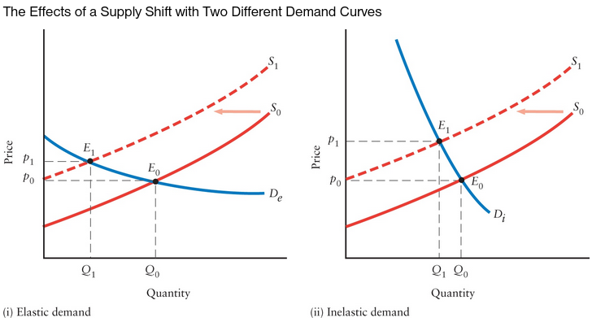
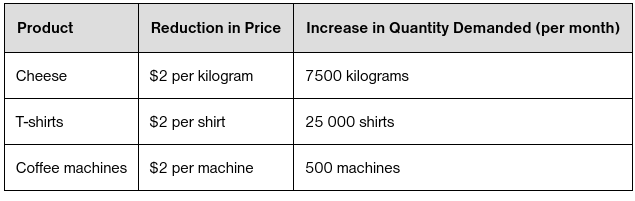
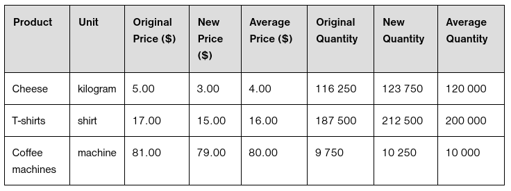
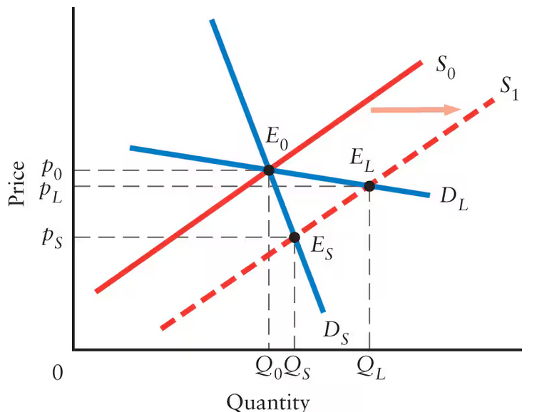
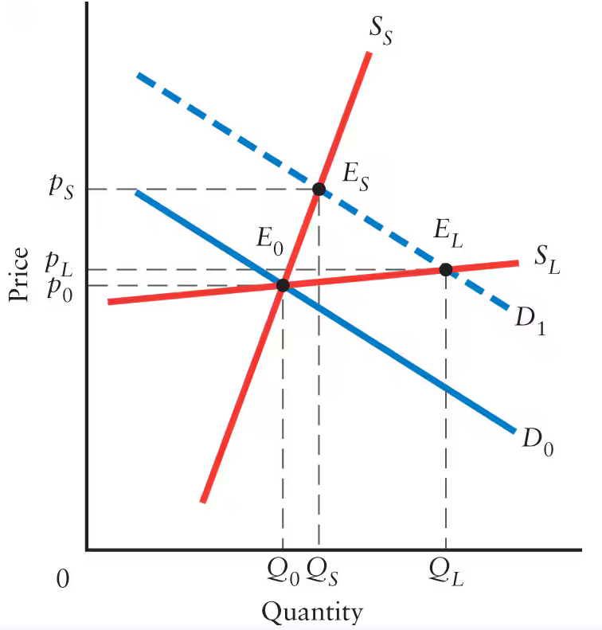
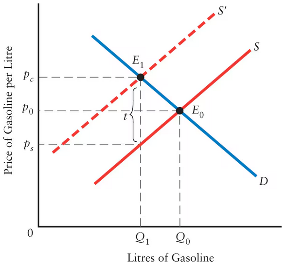
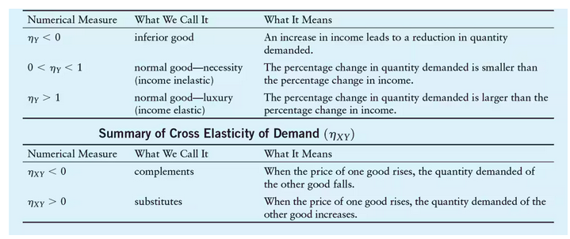

Chapter 4 Notes: Mr. Elastic
4.1
What is elasticity?
- note what is written below is correct, but also wrong. The slope represents the change in absolute terms, while elasticity is measured in percent change. Basically, the slope is just giving you the change, not telling you how far apart the points are. You know? Like the slope gets simplified, and it only conveys the rate of change, not the rate of change in relation to the whole demand/supply graph
It’s represented just the slope of the Demand curve. The graphic below conveys this perfectly (the steeper a demand curve, the less elastic the demand is). Elasticity is a metric used to understand the effects of an upward supply shift on demand. Basically, a higher elasticity means that the quantity demanded is highly reliant on the price.

- In the graphic above, if p1 - p0 > Q0 - Q1 then the demand is elastic. A cool way to think about it is if you draw a secant line between the two points, if the slope is greater than 1 the demand is inelastic, but if it is less than 1 the demand is elastic, meaning the change in quanitity exceeds the change in price. This is only true if are looking at elasticity from demand to price. If you are looking at just elasticity of demand, which is a function of price, then a steeper slope means a lower elasticity. Look at the graph and imagine a steeper vs. less steep demand curve, and shift the supply curve. This should clear it up
Some of the most retarded rules of all time
- this only works because the demand and supply curve are on the same scale. This might be the dumbest thing I’ve ever heard. Why would you ever graph two things on the same graph with different intervals on the x and y axis. How could you even draw this? This seems redundant
- This one actually makes sense, but it is more of a fact you need. You cannot work with just the absolute change. It means nothing to learn the price of cheese has been reduced 2 dollars per lbs, leading to an increase in 7500 pounds per month. We need to understand the percent change, meaning you need the equilibrium before the supply shift. The table below should illustrate how usless information is without percent change 
The table below is much more informative. The averages are useless (or not useless, but you can derive them from the information already in the table), but the rest of the table is crucial to understanding elasticity. They represent the (x,y) components of the equilibrium, where x = quantity demanded or supplied && y = price.

The book now gives the mathmatical definition of elasiticty
- The responsiveness of the quantity of a product to a change in that products price is the PED, or price elasticity of demand. This is represented in the following equation:
\[ \eta = \frac{\text{Percentage change in quantity demanded}}{\text{Percentage change in price}} \]
- The reason it is not just the slope of the secant line between the points is because of the point made above, here.
- The table below is a good repsentation of how to calculate elasticiy

- Since elasticity is percent change, it can never be negative, which the textbook writes as independent of whether the movement is from a to b or from b to a.
- The more rigorous definition for caluclutating the elasticity \[ \eta = \frac{\% \Delta \text{ in } Q}{\% \Delta \text{ in } p} = \frac{\frac{\Delta Q}{\bar{Q}}}{\frac{\Delta p}{\bar{p}}} \]
- Elasticity is unit free, it is its own thing
- It is also always positive, even though the two percent changes have different signs and normally would be considered negative
Elasticity rules
- When the percent change of quantity demanded is less than percent change of price (meaning \(\eta\) < 1), the demand is considered in elastic. The inverse means that \(\eta\) > 1, meaning demand is elastic.
- This kind of creates the piece wise function seen below:
\[ η =
\begin{cases} \eta \geq 1 & \text{elastic} \\ \eta < 1 & \text{inelastic} \end{cases}\]
- Moving down a linear demand curve, price elasticity falls continuously, even though slope is constant. This is because the average between two points is not constant, although the rate of change is. I wonder what would happen if you graphed elasticity
- \(\lim_{Q \to 0} \eta = \infty, \quad \lim_{Q \to \infty} \eta = 0\)
What determines elasticity?
- Avalibility of subsitutes
- Importance in Consumers’ budgets
- If someone spends hella money on something already, if it gets to expensive it might just be cut. Something like salt is super cheap and a small portion of your budget, so it isn’t really elastic (i.e a 50% increase in price won’t affect demand that much)
- Time period
- The example is when OPEC raised the price of oil by 400%. In the long run, the demand for oil was very inelastic, since of course people still need to drive. However, in the long run, this pointed out our dependence on oil and encouraged efforts to reduce or outright eliminate oil consumption
- This sparks the need for two types of demand curves: short run and long run demand curves, which is displayed below. 
- as you (me) can see, the short term demand curve is much more elastic and the long term curve
Elasticity and Total Expenditure
- To understand what I’m about to write, you need to know that Total expenditure = Price * Quantity
- If price declines at a slower rate than demand increases, then the demand is elastic and total expenditure goes up. If price decreases at a faster rate than demand increases, this is considered inelastic demand and total expenditure goes down.
4.2
Price Elasticity of Supply
- This is the repsonsiveness of the quantity supplied to the change in the products’ price. This is basicially just a shift of the demand curve instead of the supply curve. The equation below shows how to calculate the Price elasticity of supply, which is the same as elasticity of demand, but just with the percent change of quantity supplied
\[ \eta_S = \frac{\text{Percentage change in quantity supplied}}{\text{Percentage change in price}} \]
- However, the slope representation is inverted. Now, the higher the slope the lower the elasticity. The grpah below illustrates this: 
Summary Table
| Numerical Measure | What We Call It | What It Means |
|---|---|---|
| ηS = 0 | perfectly inelastic | Quantity supplied does not change as the price changes. Supply curve is vertical. |
| 0 < ηS < 1 | inelastic | The percentage change in quantity supplied is smaller than the percentage change in price. |
| ηS = 1 | unit elastic | The percentage change in quantity supplied is exactly equal to the percentage change in price. |
| ηS > 1 | elastic | The percentage change in quantity supplied is larger than the percentage change in price. |
| ηS = infinity | perfectly elastic | Sellers are prepared to sell all they can at the given price. Supply curve is horizontal. |
4.3
Elasticity on Taxes
- Tax incidence is used to determine whether consumers or producers (or both)
- Canadian governments levy special sales taxes called excise taxes on products like cigs, alc, and gasoline (not zaza).
- These taxes are paid by the companies, per the amount of product that they sell. This sparks the question of tax incidence: who holds the burden of the taxes? The producer actually pays them, but the consumer argues that he pays them because the price is raised.
- A graph of a taxpaid by the seller is shown below. As I can see, the price that the buyer pays goes up. However, this is not by a factor of the tax, meaning the entire burden is not placed on the buyer the tax incidence is not on the buyer, but on the buyer and the seller. Therefore, the seller is making a higher revenue, but not by a factor of t, so when the tax is subtracted the seller makes more money. 
- To make this make more sense, you have to recognize that the change in price is equal to the \(Delta y\), or the y value of the slope of the secant line. This is not equal t.
- This is also where elasticity comes in. You are shifting the supply curve, so the change in demand is going to be relative to the elasticity of demand with respect to supply. This is shown in the graphs below:
- This is indicative of an important principle: the distribution of the burden of an excise tax between consumers and producers depends on the relative elasticities of supply and demand. Since the elasticity determines the concavity of a graph, this makes a lot of sense
- You can determine who bears the larger tax burden by doing Pc - P0 to find the change in the consumers price, and then P0 - Ps to find the decline in the seller’s revenue. If the change in the consumers price is larger than the decline in the seller’s revenue, the consumer takes on the tax burden. Conversely, if the seller has a larger deline than the consumer’s increase, then the seller takes on the tax burden.
4.4
You can take the elasticity of anything
There are other important things that determine the quantity demanded besides price, such as income or weather patterns. You can take the Income elasticity of Demand as seen below:
- For most goods, an increase in income leads to an increase in quantity demanded. These are called normal goods. If an increase in income leads to a decrease in quantity demanded, then these are inferior goods.
Normal Good Rules
- If income elasticity is positive but below 1, we say the product is income inelastic. Conversely, if the income elasticity is positive but above 1, the product is income elastic.
Inferior Good Rules
- These are harder to define; it is easier to find a personal inferior good rather than an inferior good for the market as a whole (although I thought my example below is pretty good).
Cross Elasticity
- This is a statistic that relatesthe percent change in quantity demanded to a percent change in the price of a different good
- Any complementary products, such as cars and gasoline, have negative cross elasticities. If the price of alcohol goes up, the demand for cocaine goes down. This means they have a negative cross elasticity. You can use cross elasticity to determine whether products are subsititutes or complements, meaning they are either tied to each other in a positive of negative correlation (demand for one goes up, demand for the other goes up, or vice versa)
- This is important in matters of competition policy (like monopolies?)
Service Sector Facts
- Interestingly, as income rises, so does demand for commodities like cars and TVs. However, after a certain point, the demand for all manufactured goods becomes less than demand for services like eating at a resturant and entertainment. In countries like the US and Canada, the service sector has had a higher output than the manufacturing sector for years (since the 1990s). However, in developing countries like China, this only became true in 2013.
Summary Table for Income Elasticity of Demand

Summary
Important Vocab
VOCAB Elasticity
- Definition: How reliant demand is on price
- Example: A market like diabetes insulin has a very low elasticity, since you need it to surivive. So does housing. A lot of commodities have a high elasticity, such as coffee.
VOCAB Total expenditure
- Definition: How much money the producer makes, or how much the consumer spends (glass half empty/half full). Defined by Price * Quantity
- Example: 10 elmo dolls were made at 10 dollars a pop. This means disney (or whoever owns elmo) makes 100$ revenue, and we the consumer lose 100 dollars on bullshit
VOCAB Tax Incidence
- Definition: The question of who holds the burden of taxes, the producer and consumer.
- Example: In the case of cigarettes, the consumer bears the burden of the taxes because the elasticity of demand is lower than elasticity of supply.
VOCAB Inferior Goods
- Definition: A good where demand falls with income rising
- Example: Scratch off tickets
VOCAB Normal Goods
- Definition: A good where demand rises with income
- Example: Air conditioning
VOCAB Cross Elasticity of Demand
- Definition: The elasticity of quantity demanded relative to the percent change in the price of another good.
- Example: The elasticity for the demand for combustion engine cars as the price of EVs drops